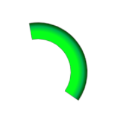

Home → Segment Gradient
Segment Gradient is a custom gradient for filling elements of round interfaces.
The following scripts should be included in the <head> section:
To create an object, the main parameters are passed to the constructor function:
type - gradient type. Valid values:
"linear" - linear gradient.
"radial" - radial gradient.
"conic" - conic gradient.direction - gradient direction. Valid values depend on the type of gradient and the type of fill object.
stops_string - line specifying the position of each color through stop points.
The color can be specified as a keyword, in HEX (RGB) format, in RGB or RGBA format.
Stop point is set as a percentage.
Color and stop point separates by a space.
Color-Point pairs in the string separates by commas.
An example of a radial custom gradient emanating from the center of a segment (Fig. 1):
SegmentGradient('radial', 'from-center', '#06ff1a 45%, #00b050 76%, #034400 98%')

Fig. 1 - Segment Gradient
Home → Segment Gradient